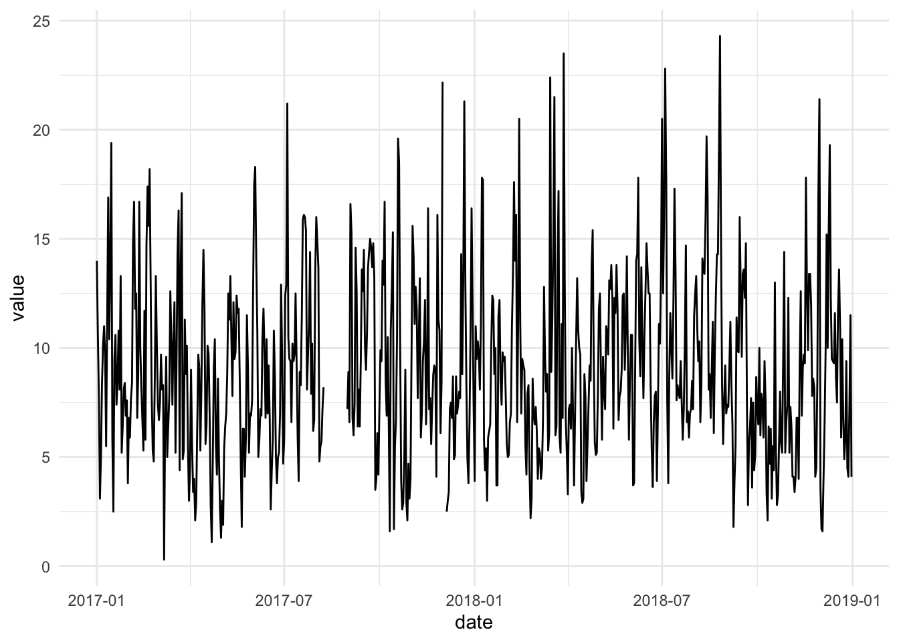
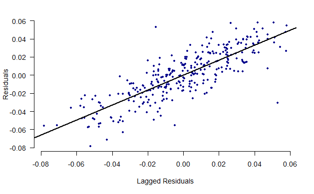
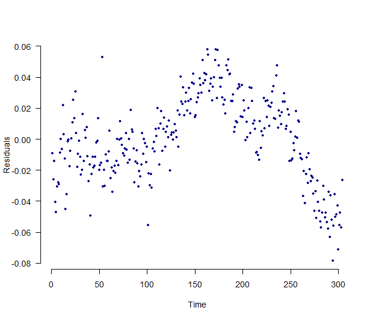
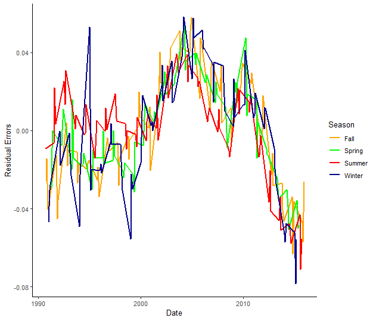
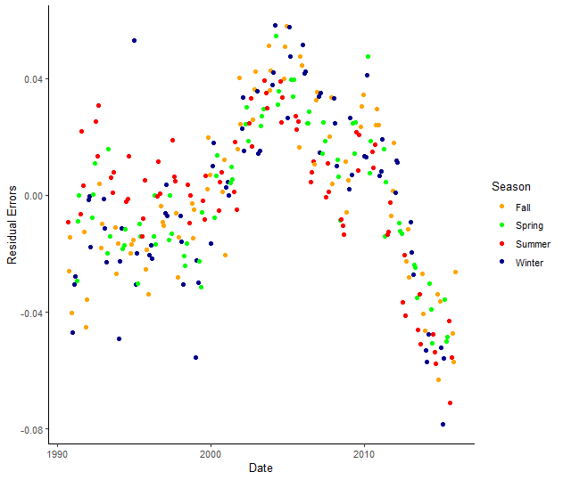
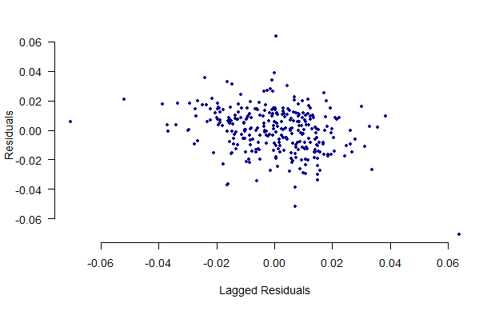
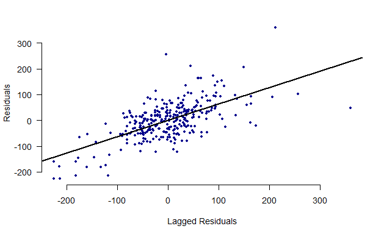
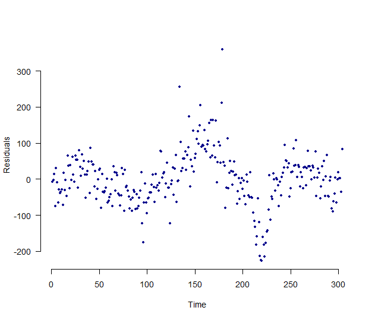
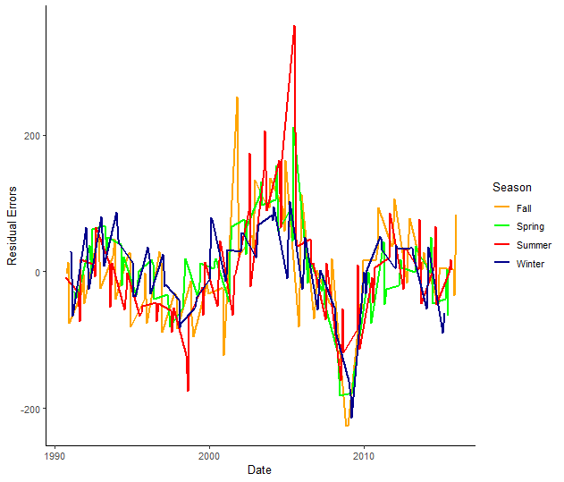
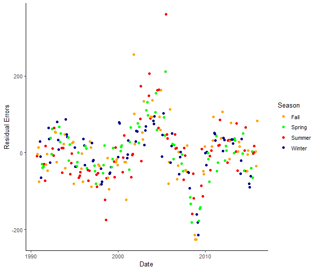

10 4/13 Lab IX | Time Series

## Packages
library(haven)
library(AER)
library(orcutt)
library(tidyverse)
library(lubridate)
library(lmtest)
library(sandwich)
## Loading Data
load("~/GOVT702/Data/Ch13_Lab_GasPrices.RData")Data description:
| Variable | Description |
|---|---|
| year | Year |
| month | Month |
| time | Time identifier (1 for first observation, etc) |
| logMilesNA | Log of vehicle miles traveled (in millions) in the U.S., not seasonally adjusted |
| logLightTruckSales | Log of retail sales of light weight trucks in the U.S. (in thousands) |
| logGasReal | Log of real price of gas |
| unem | Unemployment rate |
| logPop | Log of U.S. population (in thousands) |
10.1 Estimate a model with the log of miles driven (use the unadjusted data: logMilesNA) as a function of log gas prices, unemployment and log of population. (Don’t account for autocorrelation.) Is the effect of gas statistically significant?
## Model 1
reg.1 <- dta %>%
lm(logMilesNA ~ logGasReal + unem + logPop, data = .)
## Summary Output
summary(reg.1)##
## Call:
## lm(formula = logMilesNA ~ logGasReal + unem + logPop, data = .)
##
## Residuals:
## Min 1Q Median 3Q Max
## -0.195230 -0.045729 0.004914 0.051965 0.136480
##
## Coefficients:
## Estimate Std. Error t value Pr(>|t|)
## (Intercept) -5.918752 1.065393 -5.555 6.11e-08 ***
## logGasReal 0.030388 0.021152 1.437 0.152
## unem -0.019785 0.002654 -7.455 9.67e-13 ***
## logPop 1.461736 0.084586 17.281 < 2e-16 ***
## ---
## Signif. codes: 0 '***' 0.001 '**' 0.01 '*' 0.05 '.' 0.1 ' ' 1
##
## Residual standard error: 0.06833 on 300 degrees of freedom
## (260 observations deleted due to missingness)
## Multiple R-squared: 0.7243, Adjusted R-squared: 0.7215
## F-statistic: 262.7 on 3 and 300 DF, p-value: < 2.2e-16## 95% CI
confint(reg.1)## 2.5 % 97.5 %
## (Intercept) -8.01534205 -3.82216115
## logGasReal -0.01123688 0.07201218
## unem -0.02500777 -0.01456290
## logPop 1.29527941 1.6281934410.2 Do you think there is seasonality in driving? Test by adding dummy variables for month to the above model. Is there evidence of monthly variation? Is the effect of gas statistically significant? Now create a categorical variable for seasons and run the model without the month dummy variable.
## Removing NAs
dta <- dta %>%
drop_na()
## Creating a variable for seasons
dta <- dta %>%
mutate(season = case_when(
month == 1 | month == 2 | month == 3 ~ "Winter",
month == 4 | month == 5 | month == 6 ~ "Spring",
month == 7 | month == 8 | month == 9 ~ "Summer",
month == 10 | month == 11 | month == 12 ~ "Fall")
)
## Model 2 Months
reg.2a <- dta %>%
lm(logMilesNA ~ logGasReal + unem + logPop + factor(month), data = .)
## Summary Output
summary(reg.2a)##
## Call:
## lm(formula = logMilesNA ~ logGasReal + unem + logPop + factor(month),
## data = .)
##
## Residuals:
## Min 1Q Median 3Q Max
## -0.078372 -0.017092 0.000947 0.019921 0.058033
##
## Coefficients:
## Estimate Std. Error t value Pr(>|t|)
## (Intercept) -8.432427 0.443617 -19.008 < 2e-16 ***
## logGasReal -0.042114 0.008961 -4.700 4.04e-06 ***
## unem -0.014137 0.001122 -12.603 < 2e-16 ***
## logPop 1.651863 0.035166 46.974 < 2e-16 ***
## factor(month)2 -0.047461 0.007907 -6.003 5.81e-09 ***
## factor(month)3 0.099815 0.007933 12.583 < 2e-16 ***
## factor(month)4 0.093377 0.008030 11.628 < 2e-16 ***
## factor(month)5 0.142644 0.008063 17.690 < 2e-16 ***
## factor(month)6 0.144017 0.008003 17.995 < 2e-16 ***
## factor(month)7 0.169429 0.007981 21.228 < 2e-16 ***
## factor(month)8 0.165200 0.008007 20.633 < 2e-16 ***
## factor(month)9 0.074265 0.007976 9.311 < 2e-16 ***
## factor(month)10 0.113230 0.007960 14.224 < 2e-16 ***
## factor(month)11 0.042180 0.007915 5.329 1.99e-07 ***
## factor(month)12 0.050981 0.007893 6.459 4.45e-10 ***
## ---
## Signif. codes: 0 '***' 0.001 '**' 0.01 '*' 0.05 '.' 0.1 ' ' 1
##
## Residual standard error: 0.02795 on 289 degrees of freedom
## Multiple R-squared: 0.9556, Adjusted R-squared: 0.9534
## F-statistic: 444 on 14 and 289 DF, p-value: < 2.2e-16## 95% CI
confint(reg.2a)## 2.5 % 97.5 %
## (Intercept) -9.30555634 -7.55929713
## logGasReal -0.05975083 -0.02447708
## unem -0.01634434 -0.01192881
## logPop 1.58264989 1.72107617
## factor(month)2 -0.06302371 -0.03189915
## factor(month)3 0.08420205 0.11542848
## factor(month)4 0.07757182 0.10918316
## factor(month)5 0.12677323 0.15851447
## factor(month)6 0.12826530 0.15976855
## factor(month)7 0.15372049 0.18513846
## factor(month)8 0.14944155 0.18095910
## factor(month)9 0.05856676 0.08996317
## factor(month)10 0.09756222 0.12889798
## factor(month)11 0.02660157 0.05775803
## factor(month)12 0.03544623 0.06651523## Model 2 Seasons
reg.2b <- dta %>%
lm(logMilesNA ~ logGasReal + unem + logPop + factor(season), data = .)
## Summary Output
summary(reg.2b)##
## Call:
## lm(formula = logMilesNA ~ logGasReal + unem + logPop + factor(season),
## data = .)
##
## Residuals:
## Min 1Q Median 3Q Max
## -0.139222 -0.040786 0.004486 0.035948 0.140897
##
## Coefficients:
## Estimate Std. Error t value Pr(>|t|)
## (Intercept) -7.832131 0.806242 -9.714 < 2e-16 ***
## logGasReal -0.026933 0.016238 -1.659 0.0983 .
## unem -0.014513 0.002033 -7.137 7.33e-12 ***
## logPop 1.609829 0.063964 25.168 < 2e-16 ***
## factor(season)Spring 0.056839 0.008335 6.819 5.12e-11 ***
## factor(season)Summer 0.065784 0.008295 7.931 4.46e-14 ***
## factor(season)Winter -0.050893 0.008424 -6.042 4.56e-09 ***
## ---
## Signif. codes: 0 '***' 0.001 '**' 0.01 '*' 0.05 '.' 0.1 ' ' 1
##
## Residual standard error: 0.05104 on 297 degrees of freedom
## Multiple R-squared: 0.8477, Adjusted R-squared: 0.8446
## F-statistic: 275.5 on 6 and 297 DF, p-value: < 2.2e-16## 95% CI
confint(reg.2b)## 2.5 % 97.5 %
## (Intercept) -9.41880203 -6.245459970
## logGasReal -0.05888954 0.005024539
## unem -0.01851452 -0.010511204
## logPop 1.48394893 1.735709462
## factor(season)Spring 0.04043612 0.073242797
## factor(season)Summer 0.04946019 0.082107980
## factor(season)Winter -0.06747086 -0.03431562810.3 Briefly explain why there might be autocorrelation.
With 50 years of data, there are certainly time trends and we can reasonably expect the error term of one year to be correlated with the error term of the previous year. For example, if more people began longer commutes in the 1990s, the longer commutes (more miles driven) will continue into the 2000s so the errors will be correlated year by year.
10.4 Create a figure that is useful to assess whether there is autocorrelation (you have two choices here). Draw a sketch here.
## Saving the Residuals
dta$residual_errors <- resid(reg.2a)
## Regressing Residuals
lag_err <- c(NA, dta$residual_errors[1:(length(dta$residual_errors)-1)])plot(lag_err, dta$residual_errors, pch=20, xlab = "Lagged Residuals",
ylab = "Residuals", bty="n", col="dark blue", las=1)
abline(lm(dta$residual_errors ~ lag_err), lwd=2)
## Plotting Over Time
plot(dta$residual_errors, pch=20, xlab = "Time", las=1,
ylab = "Residuals", bty="n", col="dark blue")
# Creating season category and plotting residual error
dta %>%
ggplot() +
geom_line(aes(x=as.Date(date), y=residual_errors, col=season), size=.8) +
scale_color_manual(values=c("orange", "green", "red", "darkblue"))+
labs(x="Date", y="Residual Errors") +
theme_classic() +
theme(panel.grid.major.y=element_line(color="darkgrey", linetype="dotted"), panel.grid.minor.y=element_line(color="darkgrey", linetype="dotted")) %>%
labs(col="Season")
# Creating season category and plotting residual error
dta %>%
ggplot() +
geom_point(aes(x=as.Date(date), y=residual_errors, col=season)) +
scale_color_manual(values=c("orange", "green", "red", "darkblue"))+
labs(x="Date", y="Residual Errors") +
theme_classic() +
theme(panel.grid.major.y=element_line(color="darkgrey", linetype="dotted"), panel.grid.minor.y=element_line(color="darkgrey", linetype="dotted")) %>%
labs(col="Season")
10.5 Test whether there is first order autocorrelation. Report the key statistic from this test. What would a coefficient of 1 indicate?
## Error on Lagged Error Regression
reg.lag <- lm(dta$residual_errors ~ lag_err)
summary(reg.lag)##
## Call:
## lm(formula = dta$residual_errors ~ lag_err)
##
## Residuals:
## Min 1Q Median 3Q Max
## -0.074188 -0.010223 0.001141 0.010386 0.065748
##
## Coefficients:
## Estimate Std. Error t value Pr(>|t|)
## (Intercept) -4.056e-05 8.993e-04 -0.045 0.964
## lag_err 8.215e-01 3.300e-02 24.892 <2e-16 ***
## ---
## Signif. codes: 0 '***' 0.001 '**' 0.01 '*' 0.05 '.' 0.1 ' ' 1
##
## Residual standard error: 0.01565 on 301 degrees of freedom
## (1 observation deleted due to missingness)
## Multiple R-squared: 0.673, Adjusted R-squared: 0.6719
## F-statistic: 619.6 on 1 and 301 DF, p-value: < 2.2e-16## Durbin-Watson
dwtest(reg.2a)##
## Durbin-Watson test
##
## data: reg.2a
## DW = 0.35861, p-value < 2.2e-16
## alternative hypothesis: true autocorrelation is greater than 010.6 Use Newey-West standard errors to account for autocorrelation. Use the same variables as in part (b). Determine the t-stats and describe the similarities and difference with earlier results.
## Calculating Newey West Standard Errors
sqrt(diag(NeweyWest(reg.2a, lag=4, prewhite=FALSE, adjust=TRUE)))## (Intercept) logGasReal unem logPop factor(month)2 factor(month)3 factor(month)4 factor(month)5
## 1.038631354 0.017795927 0.001853709 0.082605874 0.005951753 0.006987587 0.008119800 0.008298968
## factor(month)6 factor(month)7 factor(month)8 factor(month)9 factor(month)10 factor(month)11 factor(month)12
## 0.008732203 0.008721058 0.008926142 0.008676850 0.007994856 0.007639009 0.006481667## Checking t-stats
coef(reg.2a) / sqrt(diag(NeweyWest(reg.2a, lag=4, prewhite=FALSE, adjust=TRUE)))## (Intercept) logGasReal unem logPop factor(month)2 factor(month)3 factor(month)4 factor(month)5
## -8.118787 -2.366494 -7.626101 19.996920 -7.974362 14.284654 11.499973 17.188144
## factor(month)6 factor(month)7 factor(month)8 factor(month)9 factor(month)10 factor(month)11 factor(month)12
## 16.492622 19.427629 18.507471 8.558977 14.162868 5.521632 7.86537310.7 Estimate a model that adjusts for autocorrelation. Use the same variables as in part (b). Describe similarities and difference with earlier results.
## Cochrane-Orcutt Model
reg.orc <- cochrane.orcutt(reg.2a)
summary(reg.orc)## Call:
## lm(formula = logMilesNA ~ logGasReal + unem + logPop + factor(month),
## data = .)
##
## Estimate Std. Error t value Pr(>|t|)
## (Intercept) -8.5660946 1.1602976 -7.383 1.675e-12 ***
## logGasReal -0.0545711 0.0165253 -3.302 0.0010800 **
## unem -0.0106665 0.0030232 -3.528 0.0004867 ***
## logPop 1.6604913 0.0922935 17.991 < 2.2e-16 ***
## factor(month)2 -0.0467377 0.0033259 -14.053 < 2.2e-16 ***
## factor(month)3 0.1018515 0.0046115 22.087 < 2.2e-16 ***
## factor(month)4 0.0977499 0.0059402 16.456 < 2.2e-16 ***
## factor(month)5 0.1473488 0.0064157 22.967 < 2.2e-16 ***
## factor(month)6 0.1473300 0.0062046 23.745 < 2.2e-16 ***
## factor(month)7 0.1725746 0.0061698 27.971 < 2.2e-16 ***
## factor(month)8 0.1692116 0.0062837 26.929 < 2.2e-16 ***
## factor(month)9 0.0794105 0.0063119 12.581 < 2.2e-16 ***
## factor(month)10 0.1184317 0.0060001 19.738 < 2.2e-16 ***
## factor(month)11 0.0466867 0.0052127 8.956 < 2.2e-16 ***
## factor(month)12 0.0549369 0.0042181 13.024 < 2.2e-16 ***
## ---
## Signif. codes: 0 '***' 0.001 '**' 0.01 '*' 0.05 '.' 0.1 ' ' 1
##
## Residual standard error: 0.0157 on 298 degrees of freedom
## Multiple R-squared: 0.9368 , Adjusted R-squared: 0.936
## F-statistic: 305.1 on 4 and 298 DF, p-value: < 1.79e-163
##
## Durbin-Watson statistic
## (original): 0.35861 , p-value: 5.127e-46
## (transformed): 2.58848 , p-value: 1e+00## "By Hand"
reg.2a <- dta %>%
lm(logMilesNA ~ logGasReal + unem + logPop + factor(month), data = .)
## Error on Lagged Error Regression
reg.lag <- lm(dta$residual_errors ~ lag_err)
rho <- summary(reg.lag)$coef[2]
## Lagging Each Variable
dta$lagmile <- dplyr::lag(dta$logMilesNA, ordered_by = dta$year)
dta$lag_gas <- dplyr::lag(dta$logGasReal, ordered_by = dta$year)
dta$lag_unem <- dplyr::lag(dta$unem, ordered_by = dta$year)
dta$lag_pop <- dplyr::lag(dta$logPop, ordered_by = dta$year)
dta$lag_month <- dplyr::lag(dta$month, ordered_by = dta$year)
## Rho-transforming
rho_mile <- dta$logMilesNA - rho*dta$lagmile
rho_gas <- dta$logGasReal - rho*dta$lag_gas
rho_unem <- dta$unem - rho*dta$lag_unem
rho_pop <- dta$logPop - rho*dta$lag_pop
rho_month <- dta$month - rho*dta$lag_month
## Running rho-transformed model
rho_trans_model <- lm(rho_mile ~ rho_gas + rho_unem + rho_pop + factor(rho_month))
summary(rho_trans_model)##
## Call:
## lm(formula = rho_mile ~ rho_gas + rho_unem + rho_pop + factor(rho_month))
##
## Residuals:
## Min 1Q Median 3Q Max
## -0.074031 -0.010478 0.001731 0.010546 0.065795
##
## Coefficients:
## Estimate Std. Error t value Pr(>|t|)
## (Intercept) -1.574882 0.200142 -7.869 7.29e-14 ***
## rho_gas -0.054194 0.016350 -3.315 0.001035 **
## rho_unem -0.010869 0.002935 -3.704 0.000255 ***
## rho_pop 1.660955 0.089211 18.618 < 2e-16 ***
## factor(rho_month)1.17850742580563 -0.001784 0.005161 -0.346 0.729847
## factor(rho_month)1.35701485161126 0.185167 0.005400 34.292 < 2e-16 ***
## factor(rho_month)1.53552227741689 0.058928 0.006011 9.803 < 2e-16 ***
## factor(rho_month)1.71402970322252 0.111988 0.005249 21.336 < 2e-16 ***
## factor(rho_month)1.89253712902815 0.071313 0.004724 15.096 < 2e-16 ***
## factor(rho_month)2.07104455483379 0.096509 0.005062 19.064 < 2e-16 ***
## factor(rho_month)2.24955198063942 0.072352 0.005462 13.246 < 2e-16 ***
## factor(rho_month)2.42805940644505 -0.014690 0.005493 -2.675 0.007911 **
## factor(rho_month)2.60656683225068 0.098120 0.005325 18.426 < 2e-16 ***
## factor(rho_month)2.78507425805631 -0.005641 0.005067 -1.113 0.266520
## factor(rho_month)2.96358168386194 0.061544 0.005106 12.053 < 2e-16 ***
## ---
## Signif. codes: 0 '***' 0.001 '**' 0.01 '*' 0.05 '.' 0.1 ' ' 1
##
## Residual standard error: 0.01596 on 288 degrees of freedom
## (1 observation deleted due to missingness)
## Multiple R-squared: 0.937, Adjusted R-squared: 0.934
## F-statistic: 306.1 on 14 and 288 DF, p-value: < 2.2e-1610.8 Estimate a dynamic model of miles driven using control variables from above. Discuss key differences.
## Distributed Lag Model
## Creating lagged miles variable
dta$lagmile <- dplyr::lag(dta$logMilesNA, ordered_by = dta$year)
reg.2.dyn <- lm(logMilesNA ~ lagmile + logGasReal + unem + logPop + factor(month) , data=dta)
summary(reg.2.dyn)##
## Call:
## lm(formula = logMilesNA ~ lagmile + logGasReal + unem + logPop +
## factor(month), data = dta)
##
## Residuals:
## Min 1Q Median 3Q Max
## -0.070624 -0.010142 0.000926 0.010416 0.063846
##
## Coefficients:
## Estimate Std. Error t value Pr(>|t|)
## (Intercept) -1.9098039 0.3676106 -5.195 3.89e-07 ***
## lagmile 0.8064020 0.0327669 24.610 < 2e-16 ***
## logGasReal -0.0152727 0.0052462 -2.911 0.00388 **
## unem -0.0025328 0.0007938 -3.191 0.00158 **
## logPop 0.3376747 0.0570442 5.920 9.20e-09 ***
## factor(month)2 0.0050743 0.0049789 1.019 0.30899
## factor(month)3 0.1910344 0.0058404 32.709 < 2e-16 ***
## factor(month)4 0.0696939 0.0046687 14.928 < 2e-16 ***
## factor(month)5 0.1185358 0.0046908 25.270 < 2e-16 ***
## factor(month)6 0.0765985 0.0053129 14.417 < 2e-16 ***
## factor(month)7 0.1062099 0.0052163 20.361 < 2e-16 ***
## factor(month)8 0.0840785 0.0056219 14.956 < 2e-16 ***
## factor(month)9 -0.0032845 0.0055601 -0.591 0.55517
## factor(month)10 0.1083157 0.0045332 23.894 < 2e-16 ***
## factor(month)11 0.0035112 0.0047687 0.736 0.46216
## factor(month)12 0.0696620 0.0045537 15.298 < 2e-16 ***
## ---
## Signif. codes: 0 '***' 0.001 '**' 0.01 '*' 0.05 '.' 0.1 ' ' 1
##
## Residual standard error: 0.0159 on 287 degrees of freedom
## (1 observation deleted due to missingness)
## Multiple R-squared: 0.9856, Adjusted R-squared: 0.9848
## F-statistic: 1305 on 15 and 287 DF, p-value: < 2.2e-16## Saving the Residuals
residual_errors <- resid(reg.2.dyn)
## Regressing Residuals
lag_err <- c(NA, residual_errors[1:(length(residual_errors)-1)])## Residuals from Dynamic Model
plot(lag_err, residual_errors, pch=20, xlab = "Lagged Residuals",
ylab = "Residuals", bty="n", col="dark blue", las=1)
10.9 Run an Augmented Dickey-Fuller Test on logMilesNA.
## Change in miles
delta_miles <- dta$logMilesNA - dta$lagmile
## Lagged Change in Miles
lag_delta_miles <- c(NA, delta_miles[1:(length(dta$lagmile)-1)])
## Augmented Dickey-Fuller Test
aug_dickey_fuller <- lm(delta_miles ~ dta$lagmile + dta$year + lag_delta_miles)
summary(aug_dickey_fuller)##
## Call:
## lm(formula = delta_miles ~ dta$lagmile + dta$year + lag_delta_miles)
##
## Residuals:
## Min 1Q Median 3Q Max
## -0.14060 -0.05492 0.01217 0.03746 0.13302
##
## Coefficients:
## Estimate Std. Error t value Pr(>|t|)
## (Intercept) -4.2949735 1.1607722 -3.700 0.000257 ***
## dta$lagmile -0.2800211 0.0454740 -6.158 2.38e-09 ***
## dta$year 0.0038698 0.0007822 4.947 1.26e-06 ***
## lag_delta_miles -0.1450016 0.0569038 -2.548 0.011330 *
## ---
## Signif. codes: 0 '***' 0.001 '**' 0.01 '*' 0.05 '.' 0.1 ' ' 1
##
## Residual standard error: 0.05804 on 298 degrees of freedom
## (2 observations deleted due to missingness)
## Multiple R-squared: 0.1833, Adjusted R-squared: 0.1751
## F-statistic: 22.3 on 3 and 298 DF, p-value: 4.705e-1310.10 OPTIONAL QUESTION: Conduct the same analysis from a, b, d, and g using light truck sales as the dependent variable. (Light truck sales use more gas than cars, so the question is whether gas prices affect the kind of car people buy which will affect gas consumption for the life of the car.)
## The Model
reg.lt <- lm(lttrucksales~logGasReal + unem + logPop + factor(month) , data=dta)
summary(reg.lt)##
## Call:
## lm(formula = lttrucksales ~ logGasReal + unem + logPop + factor(month),
## data = dta)
##
## Residuals:
## Min 1Q Median 3Q Max
## -225.99 -44.34 1.04 37.41 360.24
##
## Coefficients:
## Estimate Std. Error t value Pr(>|t|)
## (Intercept) -21060.028 1197.027 -17.594 < 2e-16 ***
## logGasReal -137.896 24.179 -5.703 2.91e-08 ***
## unem -58.137 3.027 -19.208 < 2e-16 ***
## logPop 1744.238 94.889 18.382 < 2e-16 ***
## factor(month)2 59.998 21.335 2.812 0.00526 **
## factor(month)3 164.627 21.405 7.691 2.31e-13 ***
## factor(month)4 87.059 21.669 4.018 7.50e-05 ***
## factor(month)5 148.803 21.758 6.839 4.75e-11 ***
## factor(month)6 160.837 21.595 7.448 1.10e-12 ***
## factor(month)7 142.036 21.536 6.595 2.02e-10 ***
## factor(month)8 137.300 21.605 6.355 8.09e-10 ***
## factor(month)9 56.147 21.522 2.609 0.00956 **
## factor(month)10 53.670 21.480 2.499 0.01302 *
## factor(month)11 19.991 21.357 0.936 0.35004
## factor(month)12 108.294 21.297 5.085 6.62e-07 ***
## ---
## Signif. codes: 0 '***' 0.001 '**' 0.01 '*' 0.05 '.' 0.1 ' ' 1
##
## Residual standard error: 75.41 on 289 degrees of freedom
## Multiple R-squared: 0.7722, Adjusted R-squared: 0.7612
## F-statistic: 69.98 on 14 and 289 DF, p-value: < 2.2e-16## Saving the Residuals
dta$residual_errors <- resid(reg.lt)
## Regressing Residuals
lag_err <- c(NA, dta$residual_errors[1:(length(dta$residual_errors)-1)])plot(lag_err, dta$residual_errors, pch=20, xlab = "Lagged Residuals",
ylab = "Residuals", bty="n", col="dark blue", las=1)
abline(lm(dta$residual_errors ~ lag_err), lwd=2)
## Plotting Over Time
plot(dta$residual_errors, pch=20, xlab = "Time", las=1,
ylab = "Residuals", bty="n", col="dark blue")
# Creating season category and plotting residual error
dta %>%
ggplot() +
geom_line(aes(x=as.Date(date), y=residual_errors, col=season), size=.8) +
scale_color_manual(values=c("orange", "green", "red", "darkblue"))+
labs(x="Date", y="Residual Errors") +
theme_classic() +
theme(panel.grid.major.y=element_line(color="darkgrey", linetype="dotted"), panel.grid.minor.y=element_line(color="darkgrey", linetype="dotted")) %>%
labs(col="Season")
# Creating season category and plotting residual error
dta %>%
ggplot() +
geom_point(aes(x=as.Date(date), y=residual_errors, col=season)) +
scale_color_manual(values=c("orange", "green", "red", "darkblue"))+
labs(x="Date", y="Residual Errors") +
theme_classic() +
theme(panel.grid.major.y=element_line(color="darkgrey", linetype="dotted"), panel.grid.minor.y=element_line(color="darkgrey", linetype="dotted")) %>%
labs(col="Season")
## Cochrane-Orcutt Model
reg.orc2 <- cochrane.orcutt(reg.lt)
summary(reg.orc2)## Call:
## lm(formula = lttrucksales ~ logGasReal + unem + logPop + factor(month),
## data = dta)
##
## Estimate Std. Error t value Pr(>|t|)
## (Intercept) -21271.4536 2398.4045 -8.869 < 2.2e-16 ***
## logGasReal -148.4413 44.3120 -3.350 0.0009162 ***
## unem -52.5199 6.2014 -8.469 1.286e-15 ***
## logPop 1758.1619 190.3266 9.238 < 2.2e-16 ***
## factor(month)2 60.0153 12.8791 4.660 4.842e-06 ***
## factor(month)3 165.6953 16.7822 9.873 < 2.2e-16 ***
## factor(month)4 91.0501 19.7436 4.612 6.016e-06 ***
## factor(month)5 152.7067 21.0327 7.260 3.611e-12 ***
## factor(month)6 162.2202 20.8922 7.765 1.442e-13 ***
## factor(month)7 143.1172 20.8265 6.872 3.920e-11 ***
## factor(month)8 139.6807 20.9328 6.673 1.285e-10 ***
## factor(month)9 60.0386 20.7456 2.894 0.0040938 **
## factor(month)10 57.8695 19.6575 2.944 0.0035051 **
## factor(month)11 23.3824 17.4432 1.340 0.1811433
## factor(month)12 111.1238 13.9218 7.982 3.451e-14 ***
## ---
## Signif. codes: 0 '***' 0.001 '**' 0.01 '*' 0.05 '.' 0.1 ' ' 1
##
## Residual standard error: 57.3085 on 298 degrees of freedom
## Multiple R-squared: 0.6307 , Adjusted R-squared: 0.6258
## F-statistic: 35.1 on 4 and 298 DF, p-value: < 4.603e-54
##
## Durbin-Watson statistic
## (original): 0.72932 , p-value: 1.646e-28
## (transformed): 2.33482 , p-value: 9.971e-01